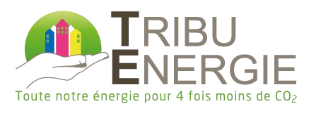

Vous trouverez sur cette page les liens d'accès aux applications.
Cette application a été conçue pour automatiser partiellement la tâche d'analyse de site. À partir d'une adresse, vous obtiendrez des informations sur l'emplacement du site telles que des informations pratiques, des données d'urbanisme, climatiques, ou encore topographiques.
Pour y accéder, cliquez sur le bouton ci-dessous.
Accéder à l'applicationCette application sera bientôt disponible pour détecter automatiquement des appareils sanitaires sur des plans et vérifier la distance de ces appareils par rapport aux gaines techniques.
Accès indisponibleCette application sera bientôt disponible pour rédiger semi-automatiquement les études RE2020 à partir de la sortie Pléiades d'un projet.
Accès indisponible